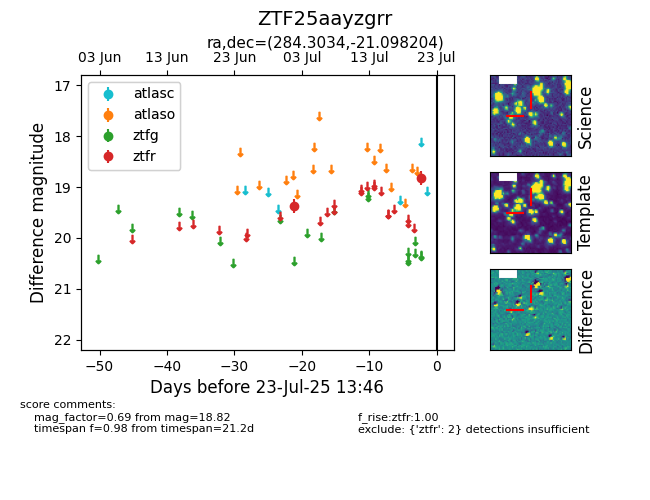

Target ZTF25aayzgrr at 2025-07-23 13:46, see:
FINK: fink-portal.org/ZTF25aayzgrr
Lasair: lasair-ztf.lsst.ac.uk/objects/ZTF25aayzgrr
ALeRCE: alerce.online/object/ZTF25aayzgrr
alt names
ZTF25aayzgrr (ztf,fink)
coordinates:
equatorial (ra, dec) = (284.3034,-21.09820)
galactic (l, b) = (14.5657,-10.66477)
photometry
last ztfr=18.82
2 ztfr detections
